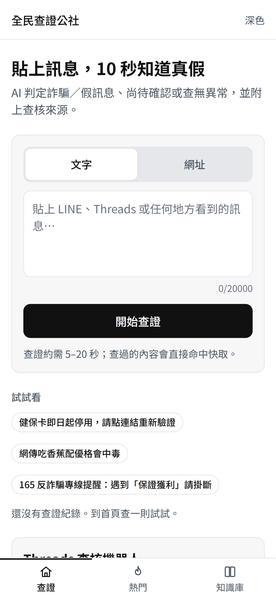
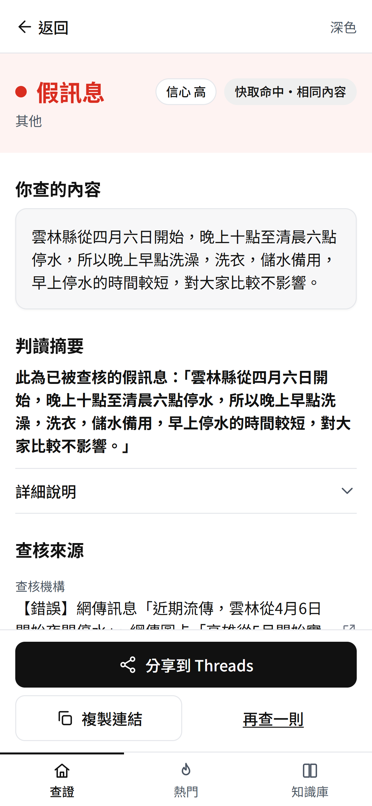
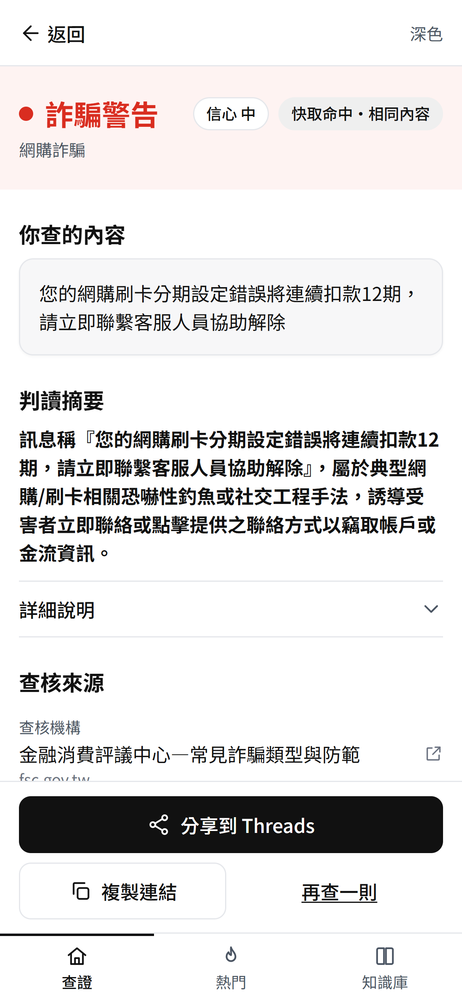
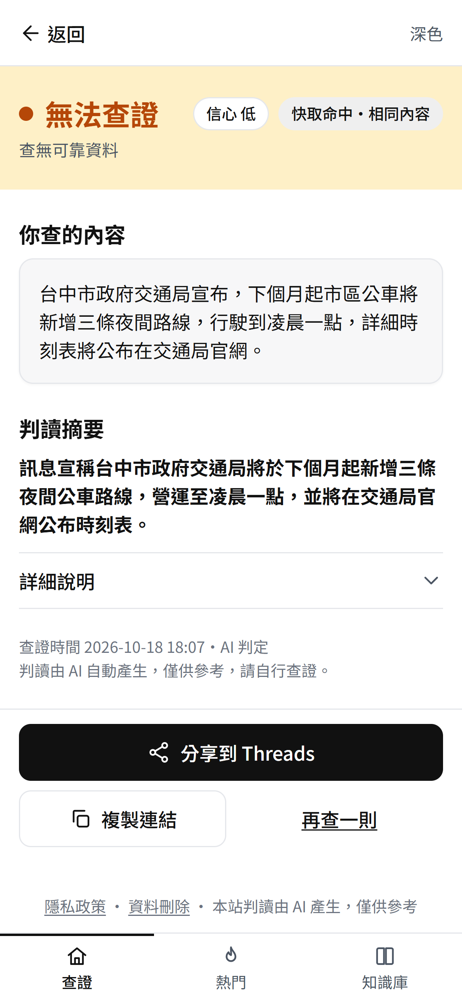

「全民查證公社」是一個免註冊、免登入的假訊息與詐騙查證網站，也是 Threads 上的查核機器人。使用者貼上在 LINE 等管道收到的可疑訊息，系統在數秒內以紅、黃、綠燈回覆判定，並列出已做出判定的查核機構來源。
系統先比對從查核機構同步而來、約 1.9 萬筆已證實的假訊息與詐騙資料，找不到才交給 AI 判讀；AI 查不到可以確認的資料時，誠實回答「無法查證」，不硬給答案。




③ 分享結果：每筆結果都有專屬網址，可以複製連結或一鍵分享到 Threads。
目前為 Meta 開發模式，只回覆測試人員。
fakenewsverify.vercel.app